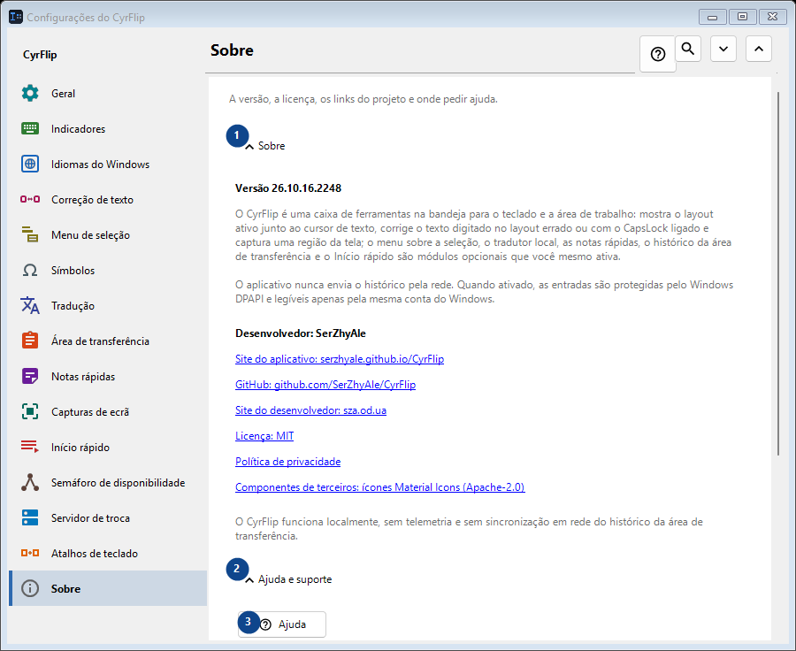
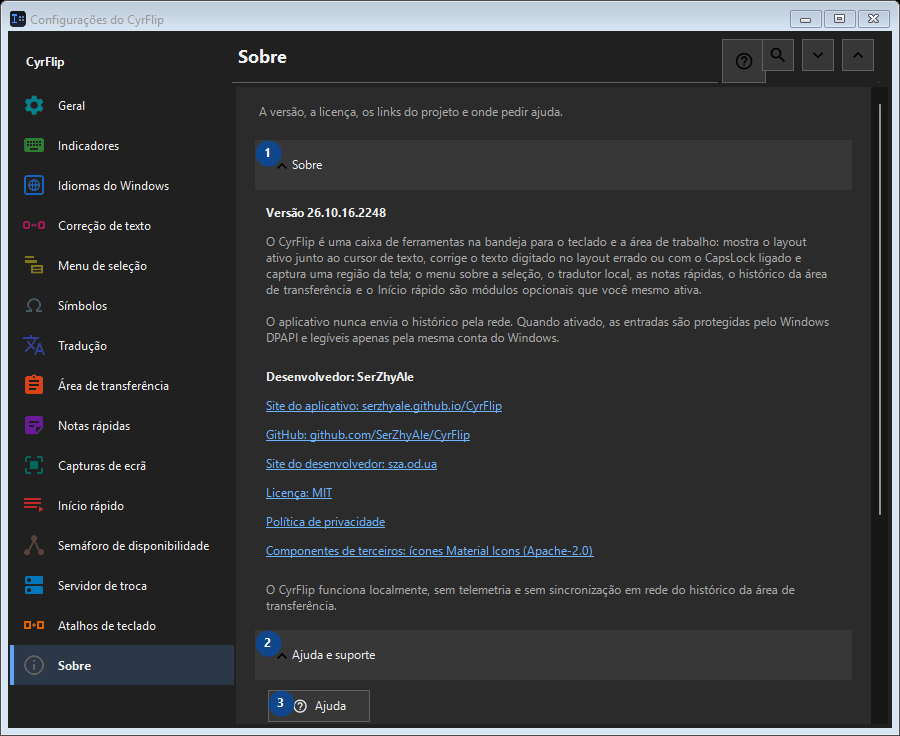

Sobre
Para que serve
A versão, a licença, os links do projeto e onde pedir ajuda.


Ordem de utilização
As definições são aplicadas de imediato. Não existe uma ordem obrigatória; use os grupos abaixo.
Elementos
1. Sobre
Use este comando para a ação indicada. Leia qualquer confirmação antes de aceitar.
Os seus atalhos2. Ajuda e suporte
Use este comando para a ação indicada. Leia qualquer confirmação antes de aceitar.
Os seus atalhos3. Ajuda
A ajuda está disponível sem ligação. Prima F1 numa janela CyrFlip ou use o botão de ajuda.
Os seus atalhos4. Mostrar a apresentação..
Conheça o CyrFlip e configure-o.
Os seus atalhos5. Diagnosticar a posição do cursor...
Cria um relatório local sobre como o Windows e o UI Automation enxergam o cursor. Use apenas se a marca não aparecer ou ficar fora do lugar em um aplicativo específico.
Os seus atalhos6. Enviar os logs ao autor..
Reúne os logs do CyrFlip em um único arquivo e abre uma mensagem ao autor com esse anexo. Você mesmo envia a mensagem - o CyrFlip não transmite nada pela rede. O histórico da área de transferência nunca entra no arquivo.
Os seus atalhos